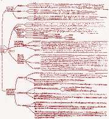
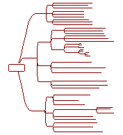

Extended Overview of the Entire Breviculum
|  |  |
| Photocopy of chart from the 14th century Karlsruhe MS
of Le Myesier's Breviculum |
The same chart reproduced with MindManager software
1998 |
VIEW
MULTI MAP
(navigate multimap by clicking
on hyperlinks and using browser's back button)